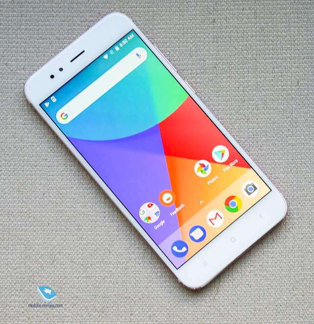

Сложный российский рынок
В 2016 году произошло знаковое событие для россиян. Представили очередной флагман Mi5, «умный» велосипед QiCycle, линейку ноутбуков Mi Notebook и смартфон Redmi Pro.
В мае 2016 года начались продажи смартфона Xiaomi Mi4i через интернет-магазины «Связного» и «Евросети». Чуть позже в онлайн-рознице появились и другие модели. Потом Xiaomi наконец-то поняла (либо ей объяснили), что бизнес-стратегия с онлайн-продажами маленькими партиями не работает на других рынках. Поэтому ей пришлось адаптироваться. И только в октябре компания с помощью нового официального дистрибьютора «Смарт оранж» открыла первый брендовый офлайн-магазин в Москве. Так начались постепенные попытки завоевать российский рынок.
Нельзя сказать, что россияне восприняли с теплом появление «белых» смартфонов Xiaomi в России. Многие жаловались на высокую наценку, например, у Xiaomi Mi5: в Китае он стоит 1999 юаней или около 20 тысяч рублей по курсу того времени или 35 тысяч рублей в официальной российской рознице. Разница большая.
2017 года для Xiaomi в России начался еще хуже. Видимо, Xiaomi и российский дистрибьютор «Смарт оранж» оказались недовольными продажами смартфонов в России и перешли на радикальные меры.
В апреле на тематических форумах и в соцсетях начали появляться жалобы, что техника компании Xiaomi, купленная в китайском интернет-магазине, не проходит таможню. Покупатели получали письма примерно одного содержания: это контрафактный товар, нарушающий права компании «Смарт оранж». Так началась небольшая война с «серыми» устройствами.
Позже выяснилось, что работники таможни запрещали ввозить смартфоны Xiaomi после обращения компании «Смарт оранж», которой принадлежат права на бренд в России. Возникла огромная неразбериха: одни юристы говорят, что действия дистрибьютора вполне законны, а другие — что таможня не может признать товар контрафактным без решения суда. Но факт остается фактом — многие покупатели не получили свои устройства.
Рассерженные покупатели оформили петицию на сайте Change.org, направленную руководству компании Xiaomi. Среди жалоб есть пункты о том, что «Смарт оранж» продает смартфоны по «чрезмерно завышенным ценам» и такая политика может негативно сказаться на репутации компании. Чуть позже выяснилось, что руководство Xiaomi уже в курсе ситуации, и они вместе с дистрибьютором пытаются решить проблему.
Ситуация разрешилась только в начале июля, когда Федеральная таможенная служба сообщила о поступлении официального обращения правообладателя («Смарт оранж»), который разрешил штучный ввоз устройств под брендом Xiaomi в Россию по почте.
Американский рынок Xiaomi захватить так и не удалось. Да и руководство компании постоянно утверждает, что США не является приоритетом для них. Поэтому на сайте mi.com там продаются только аксессуары и мелкая техника. Зато летом 2017 года компания представила первый смартфон без MIUI — Xiaomi Mi A1. На самом деле это модель Mi5X, выпущенная совместно с Google в рамках проекта Android One. Цель проекта — создать линейку доступных смартфонов с чистым Android. Из необычных результатов сотрудничества могу отметить выпуск официальной прошивки Windows 10 Mobile для Xiaomi Mi4 и Mi5.
Нельзя сказать, что россияне восприняли с теплом появление «белых» смартфонов Xiaomi в России. Многие жаловались на высокую наценку, например, у Xiaomi Mi5: в Китае он стоит 1999 юаней или около 20 тысяч рублей по курсу того времени или 35 тысяч рублей в официальной российской рознице. Разница большая.
2017 года для Xiaomi в России начался еще хуже. Видимо, Xiaomi и российский дистрибьютор «Смарт оранж» оказались недовольными продажами смартфонов в России и перешли на радикальные меры.
В апреле на тематических форумах и в соцсетях начали появляться жалобы, что техника компании Xiaomi, купленная в китайском интернет-магазине, не проходит таможню. Покупатели получали письма примерно одного содержания: это контрафактный товар, нарушающий права компании «Смарт оранж». Так началась небольшая война с «серыми» устройствами.
Позже выяснилось, что работники таможни запрещали ввозить смартфоны Xiaomi после обращения компании «Смарт оранж», которой принадлежат права на бренд в России. Возникла огромная неразбериха: одни юристы говорят, что действия дистрибьютора вполне законны, а другие — что таможня не может признать товар контрафактным без решения суда. Но факт остается фактом — многие покупатели не получили свои устройства.
Рассерженные покупатели оформили петицию на сайте Change.org, направленную руководству компании Xiaomi. Среди жалоб есть пункты о том, что «Смарт оранж» продает смартфоны по «чрезмерно завышенным ценам» и такая политика может негативно сказаться на репутации компании. Чуть позже выяснилось, что руководство Xiaomi уже в курсе ситуации, и они вместе с дистрибьютором пытаются решить проблему.
Ситуация разрешилась только в начале июля, когда Федеральная таможенная служба сообщила о поступлении официального обращения правообладателя («Смарт оранж»), который разрешил штучный ввоз устройств под брендом Xiaomi в Россию по почте.
Американский рынок Xiaomi захватить так и не удалось. Да и руководство компании постоянно утверждает, что США не является приоритетом для них. Поэтому на сайте mi.com там продаются только аксессуары и мелкая техника. Зато летом 2017 года компания представила первый смартфон без MIUI — Xiaomi Mi A1. На самом деле это модель Mi5X, выпущенная совместно с Google в рамках проекта Android One. Цель проекта — создать линейку доступных смартфонов с чистым Android. Из необычных результатов сотрудничества могу отметить выпуск официальной прошивки Windows 10 Mobile для Xiaomi Mi4 и Mi5.